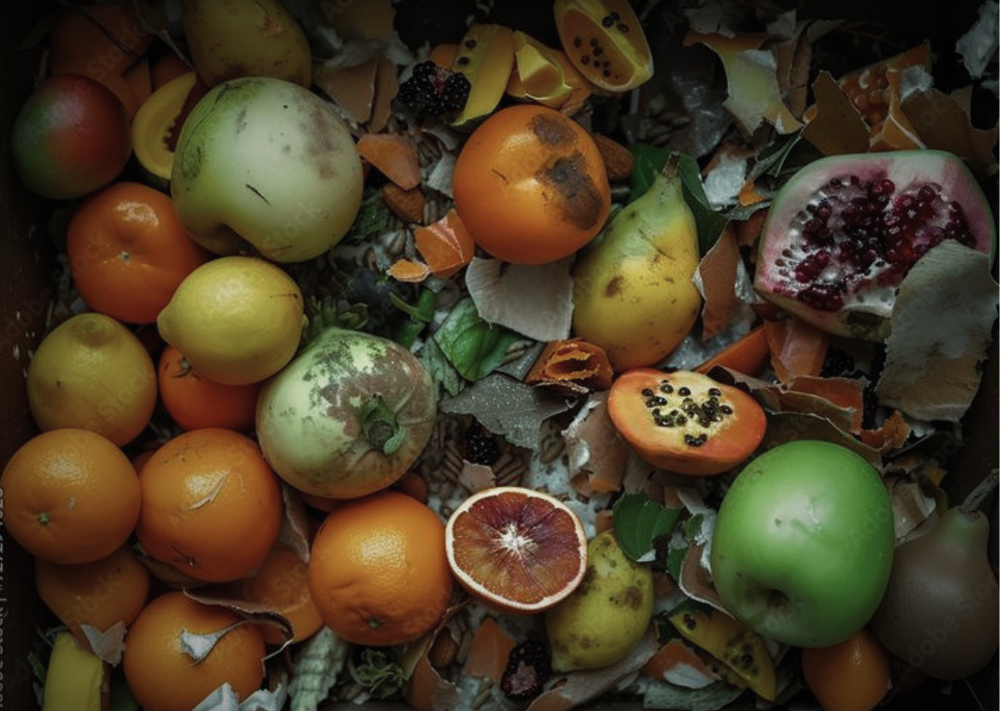

●
SYSTÈME DE PRÉDICTION ACTIF
Anticiper les surplus, éliminer le gaspillage avant qu'il n'arrive.
GaspIA met de l'avant un modèle décisionnel intelligent améliorant la localisation et la prévention des surplus alimentaires à l'étape de la chaîne logistique québécoise (banques alimentaires). Visant également la meilleure réduction du gaspillage alimentaire, celle-ci propose l'ensemble des méthodes sociétales à suivre.
À PROPOS
Qui sommes-nous?
Notre engagement environnemental pour un monde
mieux connecté est ce qui alimente nos idées.
Notre mission
GaspIA vise à optimiser la gestion du gaspillage alimentaire efficacement et concrètement grâce à l'innovation. Voilà pourquoi notre principale approche est d'améliorer la démarche des tournées de récupération des denrées à temps, aux bons endroits et avec un minimum de transport.
Notre vision
En valorisant également la réduction du gaspillage alimentaire, nous prévoyons un monde sain et stable fondée à partir d'une société écoresponsable agissant en collaborant. Ce motif est essentiel pour synchroniser nos efforts contrant le gaspillage alimentaire et ses effets négatifs.
Notre communauté
Notre initiative ambitionne à regrouper tout individus, commerces et organismes engagés et passionnés à produire un impact positif luttant contre le gaspillage alimentaire. En effet, c'est en façonnant davantage nos connexions que nos réseaux et que nos actions s'améliorent mieux.
LES ENJEUX MAJEURS ACTUELS
Ce que nous affrontons
À travers le monde et au Canada, le fait de perdre ou jeter de la
nourriture destinée à la consommation humaine devient une problématique alarmante.
L'AMÉLIORATION PAR L'INNOVATION
Une approche concrète
Comment contrer ces enjeux? Voici comment optimiser la procédure de récupération, solution
privilégiée et atténuant le gaspillage alimentaire, peut être géré par un système de prédiction intelligent.
Statistiques
Le modèle d'apprentissage automatique entraîné analyse un ensemble de données afin de prédire les surplus alimentaires. En effet, cet outil décisionnel se base sur de nombreux et différents facteurs externes et données publiques anticipant l'identification des localisations pour une récupération efficace.
~94%
🎯 Précision logistique
18 000+
📊 Données analysées
12+
🧠 Variables étudiées
LES SOLUTIONS
Les méthodes privilégiées
Ainsi, GaspIA met de l'avant ce modèle et d'autres initiatives correspondant
aux meilleurs solutions pour contrer les effets négatifs du gaspillage alimentaire évitable sur divers plans.

La problématique s'accentue
1,2 milliards de tonnes/an au Québec
1. Réduction
La réduction à la source du gaspillage alimentaire est le principe à suivre prioritairement ciblant d’éviter la création de surplus alimentaires par prévention. Adressée aux consommateurs, cette action clée et écoresponsable est définit par plusieurs méthodes.
2. Récupération
Si la génération de surplus ne peut être évitée, ceux-ci doivent être redistribués vers l’alimentation humaine. Alors, cette phase organisée se déroule en récoltant des aliments comestibles pour les donner ou les revaloriser en les utilisant à la place de les jeter.